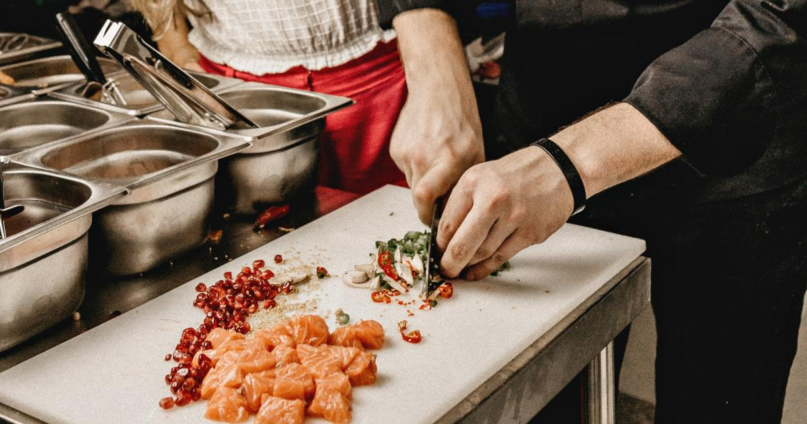

Mani sauc Anete, un man ir 16 gadi. Mana mīļākā krāsa ir tumši zila, un man ļoti patīk kaķi. Brīvajā laikā labprātāk atpūšos mājās, paskatos kādu seriālu vai aizeju pagulēt diendusu. Esmu ļoti pozitīva un ar prieku palīdzu visiem saviem tuvākajiem draugiem. Tieši šī iemesla dēļ vēlētos nākotnē kļūt par psihologu. Man ir arī liels interese par cilvēku emocijām un psiholoģiju kopumā, tāpēc uzskatu, ka šī profesija man ļaus palīdzēt cilvēkiem atrast ceļu uz labklājību. Savā brīvajā laikā mīlu lasīt grāmatas par cilvēku prātu un uzvedību. Man ir liels sapnis veidot drošu un atbalstošu vidi, kurā cilvēki varētu dalīties savās emocijās un meklēt atbalstu.
Es nodarbojos ar dejošanu jau vairāk kā 10 gadus. Man ir prasmes sadarboties deju grupās, kur ir nepieciešama saskaņota un sinhronizēta kustību izpilde. Papildus tam, esmu apmācījusies dažādus deju žanrus, piemēram, hiphopu un moderno deju, un spēju veiksmīgi iekļaut tos savā dejošanas repertuārā. Es redzu dejošanu ne tikai kā fizisko aktivitāti, bet arī kā izpausmes veidu, kas ļauj man paust sevi un izjust kustību brīvību. Man ir arī prasmes pielāgoties dažādiem deju mūzikas ritmiem un izteiksmīgi interpretēt dziesmas caur savu dejotāja izteiksmi.
Manas prasmes ēdiena gatavošanā ir plašas un daudzpusīgas. Es ne tikai spēju sagatavot ikdienas ēdienus, bet arī izbaudu eksperimentēšanu ar dažādiem receptēm un sastāvdaļām, lai radītu jaunas un garšīgas ēdienu kombinācijas. Man ir pieredze gan ar tradicionālām ēdieniem, gan arī ar dažādām ēdienkarti pasaules virtuves piedāvājumos. Esmu prasmīga gan ar siltiem ēdieniem, piemēram, zupām un ceptiem ēdieniem, gan arī ar aukstiem ēdieniem, salātiem un uzkodām.
Manas prasmes ēšanā ietver spēju izvēlēties daudzveidīgu un sabalansētu uzturu, kurā ietilpst visas nepieciešamās uzturvielas. Es cenšos ēst sezonas augļus un dārzeņus, ievērojot to svaigumu un kvalitāti. Man ir izpratne par uztura vērtību un to, kā dažādi produkti ietekmē veselību. Papildus tam esmu iemācījusies kontrolēt porcijas lielumu un ēst lēni, lai labāk uztvertu sajūtas pilnības sajūtu un novērstu pārēšanās risku. Es cenšos izvairīties no pārāk daudz procesētu pārtikas produktu un dodu priekšroku veselīgiem un dabīgiem ēdieniem.
Es spēju radīt mākslas darbus dažādās tehnikās, izmantojot gan tradicionālus, gan digitālus zīmēšanas rīkus. Man ir pieredze gan ar zīmējumu, gan glezniecību, un esmu mēģinājis dažādus mākslas stilus. Esmu spējīgs attīstīt un izteikt idejas vizuālā formā, būt oriģināls un izmantot dažādus materiālus. Man ir izpratne par proporcijām, kompozīciju un krāsu izmantošanu, kas ļauj man radīt harmoniskus un pievilcīgus mākslas darbus.